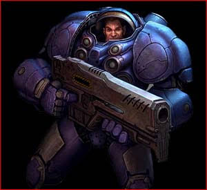
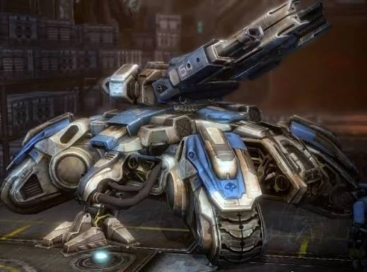
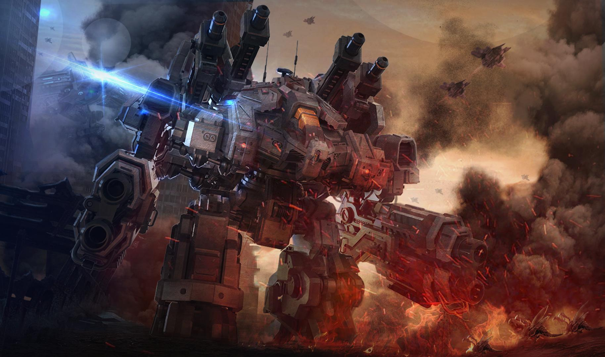

Терраны — это человеческая раса во вселенной StarCraft, состоящая из потомков земных заключенных и колонистов, чьи корабли потерпели крушение в отдаленном секторе Копрулу. Оказавшись в суровом и неизведанном космосе, они разделились на несколько противоборствующих фракций, среди которых выделяются Конфедерация и сменивший её тоталитарный Доминион. Не обладая биологическим превосходством зергов или продвинутыми технологиями протоссов, терраны выживают за счет невероятной приспосабливаемости, тактической гибкости, использования тяжелой бронетехники, ядерного оружия и скрытных псиоников-призраков.
Основные юниты

Морпех

Танк

Тор